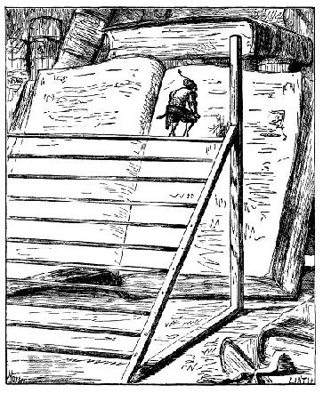
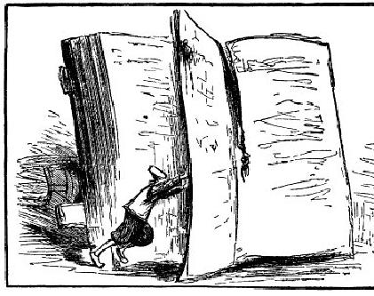

Lòng yêu nước của tác giả - Tác giả đề đạt với vua một kiến nghị có lợi - Kiến nghị bị bác bỏ - Sự dốt nát của nhà vua về vấn đề chính trị - Việc giáo dục thiếu sót và thiển cận ở xứ này - Luật pháp - Đời sống quân sự và các đảng phái trong nước.
Chỉ vì vô cùng tha thiết với sự thật, tôi mới không thể bỏ qua được phần này của câu chuyện. Hễ tôi tỏ ý bất bình là tôi bị chế giễu ngay tức khắc, thế là tôi cứ phải lẳng lặng mà nghe, trong khi Tổ quốc tôi bị sỉ nhục đủ điều. Vệc xảy ra như vậy khiến tôi não lòng não ruột như bất cứ bạn đọc nào khác. Nhưng vì nhà vua thích hiểu sâu sắc đến tận chân tơ kẽ tóc nên tôi không thế nào từ chối được, bởi chúng tôi bị ràng buộc bằng những ân huệ ngài đã ban cho tôi và nhưng quy định sơ đẳng về phép lễ độ. Thế nhưng, để tự biện bạch, tôi có thể nói rằng, tôi đã tránh né vô khối nhưng câu hỏi mà vua đặt ra, và tôi đã liệu bề giải đáp thế nào cho thuận lợi hơn là sự thật cho phép, bởi vì lúc nào tôi cũng đứng về phía Tổ quốc tôi mà giãi bầy. Tôi che giấu những điểm yếu, những điều phi lý và làm nổi bật những đức hạnh và vẻ đẹp của đất nước tôi. Trong biết bao nhiêu cuộc đàm luận, tôi đã cố gắng hết sức làm như vậy nhưng cuối cùng chẳng có kết quả gì.
Nhưng dù sao cũng phải đánh giá một cách rộng lượng một ông vua vốn sống cách biệt hẳn với thế giới bên ngoài, và do đó không hiểu những phong tục, tập quán của các nước khác. Vì không hiểu biết như vậy nên sinh ra nhiều thành kiến và suy nghĩ hẹp hòi, tất nhiên không thấy có ở các nước châu Âu văn minh hơn. Và sự thật, không thể lấy quan niệm, những ý kiến của một ông vua sống biệt lập như vậy để làm mẫu mực cho đức hạnh của toàn thể nhân loại.
Để dẫn chứng điều này và để chứng tỏ kết quả tai hại của sự giáo dục thiển cận như thế, tôi xin kể tỉ các bạn một câu chuyện khó có thể tin được là thật. Với hy vọng được vua đánh giá đúng mức, tôi kể với ngài một phát minh của chúng ta cách đây ba, bốn trăm năm. Đó là sự phát minh thứ bột kỳ diệu, chỉ cần một tia lửa nhỏ là đống bột, dù to bằng cả trái núi, tức khắc nổ tung, gây nên tiếng nổ và sức phá hoại hơn sét đánh. Chỉ cần một ít bột ấy nhét vào các ống đồng hay ống sắt là đủ lao đi một viên đạn sắt hay đạn chì với một sức mạnh và một tốc độ không sức gì cản nổi. Những viên đạn lớn bắn đi như thế không những có thể quét sạch một đạo quân mà còn có thể phá vỡ những thành trì vững chãi nhất, đánh đắm những tàu thủy chứa hàng nghìn người, và nếu người ta buộc những viên đạn ấy thành một chuỗi thì buồm, cột buồm và hàng trăm người có thể bị cắt đôi ra cả một vùng bị tàn phá tan hoang. Thường thường, chúng tôi còn nhồi thứ bột ấy vào những thùng rỗng, hình cầu rồi dùng máy móc lao vao những thanh phố bị vây hãm, thế là nhà cửa nổ tung tất cả mọi người trong vùng chết tươi. Tôi nói: "Tôi biết cách chế thứ bột ấy giá rẻ lắm, và tôi cũng biết cách hướng dẫn thợ làm các thứ ống nhồi thuốc ấy. Tất nhiên, mọi thứ sẽ làm theo kích thước tương đối với mọi vật khác ở xứ sở này, ống to nhất không cần dài một trăm foot. Chỉ cần hai mươi hoặc ba mươi ống là đủ phá tan tành những bức tường thành của một thành phố vững chãi của nước ngài, trong mấy tiếng đồng hồ, hoặc, nếu cần, thì nó có thể phá hủy được cả thủ đô của ngài". Sau cùng tôi thưa với hoàng thượng rằng, để tỏ lòng biết ơn của tôi đối với sự chăm sóc, ưu đãi và che chở của nhà vua mà tôi được hưởng. Tôi sẽ tặng vua phát minh ấy.
Vua khiếp đảm khi nghe lời tôi miêu tả những máy móc ấy và lời đề nghị của tôi. Ngài tự hỏi lại sao một con sâu bọ oắt con và hèn kém như thế (do chính là những từ ngài dùng) lại có thể nghĩ ra được một thứ khủng khiếp và lại kể một cách bình thản như thế, hình như không xúc động tí gì trước những cảnh tàn sát và hủy hoại mà nó miêu tả. Chắc chắn kẻ đã sáng chế ra thứ máy đó phải là một hung thần, là kẻ thù của nhân loại. Còn về riêng ngài, mặc dù ngài rất khao khát các việc phát minh, nhưng thà mất hẳn một nửa nước còn hơn là biết sự bí mật kia. Ngài bảo tôi, nếu tôi còn tha thiết với cuộc sống, thì từ nay không được nói đến cái thứ phát minh ấy nữa.
Quả là những nguyên tắc hẹp hòi và thiển cận Một ông vua có đầy đủ đức hạnh khiến cho mọi người kính phục, yêu mến, vốn thông minh tính trời, lại khôn ngoan, hiểu biết sâu sắc, có tài năng, lại được thần dân kính yêu, mà, chỉ vì một chút băn khoăn quá mức mà người châu Âu chúng ta không bao giờ nghĩ đến, có thể bác bỏ điều khiến ông ta có thể trở thành chủ nhân tuyệt đối của cuộc đời, của tự do, và có thế chiếm lĩnh toàn bộ của cải của thần dân mình! Tôi không hề có ý định làm giảm uy danh của ông vua tuyệt vời ấy, nhưng tôi e ngại bạn đọc người Anh có thể bớt kính phục ngài sau sự việc này. Tôi nghĩ rằng khuyết điểm này là do sự dốt nát mà ra. Ớ xứ sở này, người ta chưa coi chính trị là khoa học, như những bộ óc thông minh nhất ở châu Âu thường nghĩ. Tôi nhớ một hôm, tôi thưa với ngài rằng, ở châu Âu có hàng nghìn quyển sách nói về nghệ thuật trị nước, thì ngài kết luận ngay (trái hẳn với điều tôi suy nghĩ) rằng chúng ta hẳn là những kẻ kém thông minh. Ngài khinh bỉ và coi rẻ tất cả mọi thứ bí mật, khôn khéo, mưu mô xảo quyệt của bất cứ ông vua hay vị tổng trưởng nào. Ngài không sao hiểu nổi thế nào là "bí mật quốc gia" nếu không phải là ám chỉ một kẻ thù hoặc một nước thù địch nào. Ngài khăng khăng cho rằng khoa học trị nước chỉ bao gồm lương tri, sự độ ượng và sự quyết định mau chóng trong những việc dân sự và hình sự. Ngài cho rằng bất cứ ai trồng được hai bông lúa hay hai ngọn cỏ ở nơi mà trước đây chỉ trồng được một, đều có ích cho loài người ta cho Tổ quốc hơn tất cả những người làm chính trị cộng lại.
Sự hiểu biết khoa học của dân xứ này quả là ít ỏi, nhưng phải công nhận rằng họ rất giỏi về các môn lý luận học, sử học, thơ ca và toán học. Môn toán học duy nhất là toán học thực hành nhằm để phục vụ nông nghiệp và các công nghệ cơ khí, còn ở châu Âu chúng ta, chắc bộ môn ấy không được đánh giá cao. Còn về các vấn đề tư tưởng, thực thể, siêu hình học, họ không có một khái niệm gì.
Không một đạo luật nào của xứ sở này được dài quá số chữ cái trong bảng vần chữ cái của họ, mà bảng vần chỉ bao gồm hai mươi hai chữ. Sự thật các đạo luật đều ghi ngắn gọn dưới con số hai mươi hai, giản dị và sáng sủa, thành thử không một người nào có thể giải thích theo nhiều nghĩa. Vả lại, ở đây bình luận một đạo luật là một trọng tội.

Cũng như người Trung Quốc, từ lâu lắm, họ biết nghề in, nhưng các thư viện không to lắm. Thư viện của nhà vua, được công nhận là thư viện to nhất quốc gia, cũng không có quá một nghìn cuốn sách, xếp trong một hành lang dài một nghìn hai năm foot. Tất cả các sách của thư viện, tôi được sử dụng hết. Bác thợ mộc của hoàng hậu đóng cho cô Glumdalclitch một cái bục bằng gỗ cao hai mươi nhăm foot, có nhiều bậc, mỗi bậc rộng năm mươi foot cái bục ấy có thể mang đi mang lại được, vì đặt cách xa tường chừng mười foot. Quyển sách tôi đọc đặt tựa vào tường. Thoạt tiên, tôi trèo lên chỏm cái bục, quay mặt vào cuốn sách. Tôi bắt đầu đọc những dòng trên cùng, đi từ phải sang trái chừng tám hay mười bước, tùy theo bề dài của dòng chữ, cho đến khi dòng chữ thấp quá, không đọc được nữa thì tôi xuống một bậc, cứ thế cho đến hết trang, rồi tôi lại trèo lên để đọc trang sau. Tôi phải dùng hai tay để giở sách. Điều này chẳng khó khăn gì, bởi vì mỗi tờ giấy dày và cứng bằng bìa carton của chúng ta. Nhưng quyển sách cỡ to nhất bề dài không quá mười tám hay hai mươi foot.

Văn phong của họ rõ ràng, mạnh mẽ và giản dị, không một chút bay bướm vì người ta hết sức tránh dùng những từ không cần thiết và những cách đặt câu cầu kỳ. Tôi chăm chú đọc nhiều sách của họ, đặc biệt là những loại sách sử học và luân lý học. Tôi rất thích một cuốn sách nhỏ đã cũ, lúc nào cũng để trong phòng ngủ của cô Glumdalclitch. Cuốn sách này là của bà bảo mẫu, một người có vẻ đăm chiêu và trang nghiêm, luôn luôn chú ý đến vấn đề luân lý và sự sùng đạo. Quyển sách bàn về sự yếu đuối của loài người, nó không được mọi người chú ý lắm, trừ phụ nữ và đám dân chúng. Dù sao tôi cũng muốn biết một nhà văn của xứ sở này suy nghĩ về vấn đề đó ra sao. Tác giả cũng chỉ nói những điều ấy rất chung chung như những nhà luân lý học ở châu Âu. Ông ta chứng minh rằng, về bản chất: con người là một sinh vật nhỏ bé, bất lực, không thể chống chọi được với những hiện tượng tự nhiên cũng như với sự hung bạo của thú dữ, và chẳng thể đọ sức được với con vật này hay con vật khác về các mặt sức khỏe, nhanh nhẹn, về sự lo xa hay sáng kiến. Ông nói thêm rằng, từ mấy thế kỷ nay tự nhiên đã thoái hóa dần, và hiện nay, nó chỉ sinh ra những quái thai so với thời xửa thời xưa. Ông ta nghĩ rằng, loài người lúc mới sinh ra không những to lớn hơn ngày nay mà còn có những người khổng lồ nữa. Ông nói điều này không chỉ được chứng minh bằng lịch sử và truyền thống, mà còn bằng những bộ xương và sọ người ngẫu nhiên tìm thấy ở nhiều nơi trong nước, nó to lớn hơn nhiều so với loài người cằn cỗi hiện nay. Ông ta khẳng định rằng quy luật của tự nhiên đòi hỏi lúc mới sinh thành loài người rất to lớn và khỏe mạnh, chẳng đến nỗi phải bỏ xác vì một hòn ngói rơi từ trên mái nhà xuống hoặc vì một hòn đá do trẻ con ném, hoặc vì trượt chân ngã xuống suối. Từ những lý luận như vậy, tác giả rút ra những nguyên lý bổ ích cho cách xử thế trong cuộc đời, nói ra đây cũng chẳng ích gì. Về phần tôi, tôi không thể không nhận định rằng cách thuyết giáo luân lý kiểu ấy, cách than oán tự nhiên và thổi phồng khuyết điểm của loài người ấy hiện nay rất phổ biến. Và tôi nghĩ, nếu xem xét một cách nghiêm túc thì những lời than oán ấy chẳng có cơ sở ở châu Âu chúng ta cũng như ở nước những người khổng lồ này.
Lực lượng quân sự của họ gồm một trăm mười sáu nghìn bộ binh và ba mươi hai nghìn kỵ binh. Tuy nhiên, nếu đấy cũng có thể gọi là quân đội khi lính chỉ gồm những nhà buôn, nông dân, và các chỉ huy là nhưng vị đại thần, các nhà quý tộc, những người này không lĩnh một đồng lương hoặc một chút tiền thưởng nào. Sự thực, việc luyện tập của họ rất chu đáo, họ có một kỷ luật rất nghiêm, và điều này cũng không có gì đáng ngạc nhiên, vì chỉ huy của mỗi người nông dân lại chính là lãnh chúa của anh ta, của mỗi thị dân là các vị chức sắc trong thành phố, những người đã được bầu ra theo lối bầu phiếu như ở thành Venice.
Tôi thường thấy lính vệ binh ở Lorbrulgrud tập ở một quảng trường gần thủ đô. Tất cả có không quá hai mươi nghìn lính bộ và sáu nghìn kỵ sĩ nhưng họ tập trên một vùng quá rộng nên tôi không thể đếm chính xác con số được. Một kỵ sĩ cưỡi trên lưng ngựa cao tới chín mươi foot. Một tiếng hô, tất cả đội quân đồng loạt rút gươm ra khỏi vỏ, cảnh tượng nom thực oai hùng. Tưởng chừng hàng vạn tia chớp cùng lóe lên một lúc trên. Tôi tò mò muốn biết, tại sao đất nước này hiểm trở biết bao, vậy nhà vua còn dạy dân luyện tập kỷ luật quân sụ làm gì, nhưng chỉ ít lâu sau, qua những buổi nói chuyện với nhiều người về vấn đề này, hoặc đọc lịch sử của họ, tôi đã hiểu rõ vấn đề. Chả là suốt trong nhiều thế kỷ, người dân ở đây đã mắc phải một chứng bệnh mà con người ai cũng không thoát được, là các nhà quý tộc thì đánh nhau để tranh giành quyền hành, dân chúng thì đấu tranh để đòi tự do và nhà vua thì gây chiến để độc tài thống trị.
Căn bệnh đó tuy đã được luật pháp của đất nước ngăn chặn rất thông minh, nhưng đôi khi những luật pháp ấy vẫn bị một trong ba loại người trên vi phạm, do đó đã nổ ra những cuộc nội chiến, và cuộc nội chiến cuối cùng đã may mắn được ông nội nhà vua hiện nay chấm dứt. Đức vua này đã dàn xếp để ai cũng được thỏa mãn, nhưng đội vệ binh vì đã được mọi người nhất trí tổ chức nên, do đó nó vẫn cứ tồn tại từ ngày đó, và tuân theo một kỷ luật rất nghiêm.